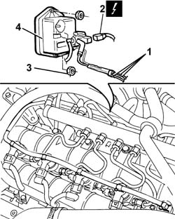

1060G70 VACUUM RESERVOIR - R.R.
- Path
- Procedures > 10 ENGINE > 1060 DIESEL FUEL INJECTION SYSTEM > 1060G DIESEL INJECTION PRESSURE PUMP ELECTRONIC CONTROL > 1060G70 VACUUM RESERVOIR - R.R.
- Kind
- repair procedure (removal / refitting; the operation number is the code)
- Applies to
- engines: 2.4 JTD 20V; all production periods
- Interactive page
- https://sloeber94.github.io/elrnDB-lThss/en/#/851206
Applies to: engines: 2.4 JTD 20V; all production periods
 Removing
Removing
 Refitting
RefittingSee in Op. 7040D50 ENGINE COMPARTMENT UPPER SOUND INSULATION SHIELD - R.R.
See in Op. 1016A10 SOUND-PROOFING COVER - R.R.
See in Op. 1060F50 FUEL RETURN MANIFOLD PIPE - R and R
1. Disconnect the vacuum pipe from the brake servo vacuum pipe (1a), from the pneumatic valve on the throttle casing (1b) and from the rigid section connected to the variable geometry solenoid valve (1c).
2. Disconnect the solenoid valve electrical connection on the vacuum reservoir.
 | Description | Connector |
|---|---|---|
2 | Throttle body solenoid valve | L062 |
- Release the vacuum pipes from the retaining bands.
3. Undo the nuts fixing the vacuum reservoir to the mounting bracket.
4. Remove the vacuum reservoir.

Applies to: engines: 2.4 JTD 20V; all production periods
Refitting
Removing- Fit the vacuum reservoir and tighten the nuts fixing it to the mounting bracket.
- Connect the solenoid valve electrical connection to the vacuum reservoir.
| Description | Connector |
|---|---|---|
. | Throttle body solenoid valve | L062 |
- Connect the vacuum pipe to the brake servo vacuum pipe, to the pneumatic valve on the throttle casing and to the rigid section connected to the variable geometry solenoid valve.
- Fasten it to the engine with the plastic bands opened previously.
See in Op. 1060F50 FUEL RETURN MANIFOLD PIPE - R and R
See in Op. 1016A10 SOUND-PROOFING COVER - R.R.
See in Op. 7040D50 ENGINE COMPARTMENT UPPER SOUND INSULATION SHIELD - R.R.
Topics linked from this page (3)
- 1016A10 SOUND-PROOFING COVER - R.R.
- 1060F50 FUEL RETURN MANIFOLD PIPE - R&R
- 7040D50 ENGINE COMPARTMENT UPPER SOUND INSULATION SHIELD - R.R.